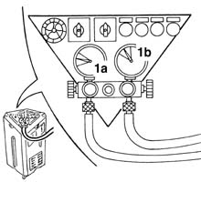
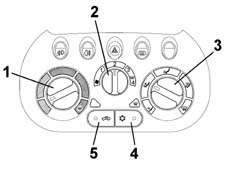

5040B Check on operation of air conditioning system (pressures)
- Path
- Test > 50 AUXILIARY UNITS > 5040 AIR CONDITIONING CASING AND COMPONENTS > 5040B Check on operation of air conditioning system (pressures)
- Kind
- test / check procedure
- Applies to
- all engines; all production periods
- Interactive page
- https://sloeber94.github.io/elrnDB-fMltpl/en/#/2892398
Applies to: all engines; all production periods
Close all the doors and windows.
Set the gearbox to neutral.
Start the engine and run it at 1250 - 1300 rpm.
Connect the vehicle's system to the specific recharging equipment (see PROCEDURES OP. 5040A10 Air conditioning refrigerant CIRCUIT - Draining and Refilling), in order to be able to read the low pressure (1a) value (pressure gauge A) and high pressure value (1b) (pressure gauge B).

Set the temperature selector to the coldest setting.
Set the fan speed selector to "2".
Set the distribution selector to the "front" position.
Make sure that the air conditioner is off (A/C button released and LED off).
Switch on recirculation (button pressed).

Check on both pressure gauges of the recharging system that the pressures reach the value of 5-6 bar (higher values correspond to higher external temperatures).
Switch on the air conditioner (A/C button pressed and LED on).
Check that within 1 minute the pressure reaches 2.5 - 3 bar on the low pressure gauge A and 15 - 16 bar on the high pressure gauge B.
Wait for the engine cooling fan to come on. Check that the pressure reaches 1.5 - 1.8 bar on the low pressure gauge and 10 - 12 bar on the high pressure gauge B.
At this point, the fan must switch itself off and the pressures must revert to the values indicated previously.